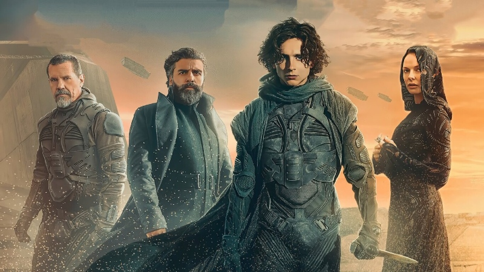
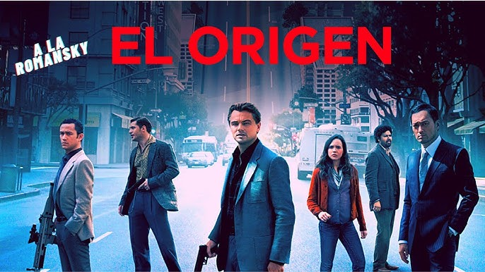
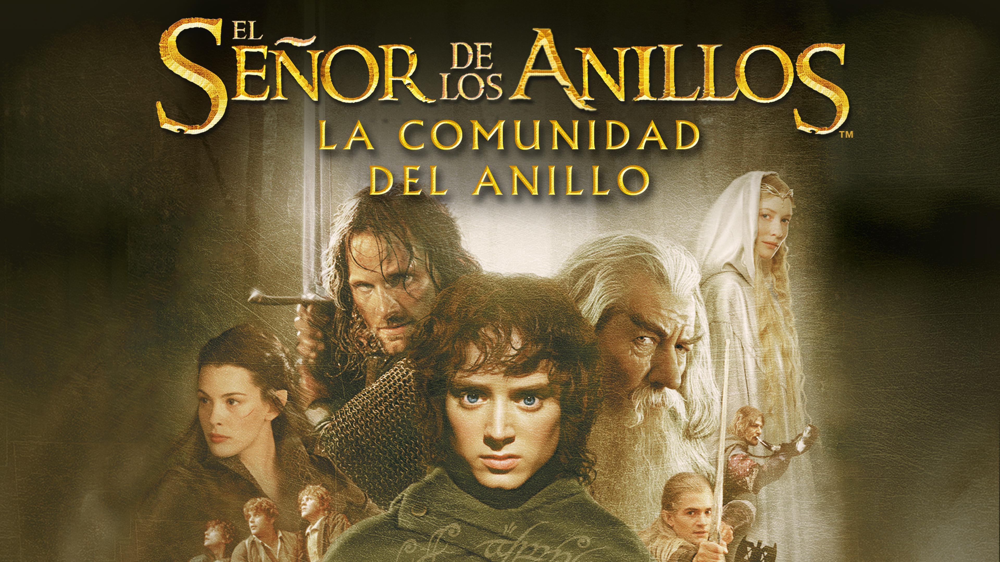

Reseñas de Películas
Nuestras películas favoritas del año:
Dune
En el año 10191, el duque Leto de la Casa Atreides, gobernante del planeta oceánico Caladan, es asignado por el emperador Padishah Shaddam Corrino IV para reemplazar a la Casa Harkonnen como gobernante del feudo de Arrakis. Arrakis es un inhóspito planeta desértico y la única fuente de "especia", una valiosa sustancia que extiende la vitalidad humana y es fundamental para los viajes interestelares.
El Origen
Dom Cobb (Leonardo DiCaprio) es un ladrón, prófugo de la justicia estadounidense por el supuesto asesinato de su esposa, especializado en infiltrarse en los sueños para robar ideas, claves de bancos, etc. mientras sus víctimas duermen
El Señor de los Anillos: La Comunidad del Anillo
El destino de la Tierra Media está en juego mientras Frodo y ocho compañeros que forman la Compañía del Anillo comienzan un largo y peligroso viaje hacia el Monte del Destino en la tierra de Mordor, que es el único lugar en el que el anillo puede ser destruido